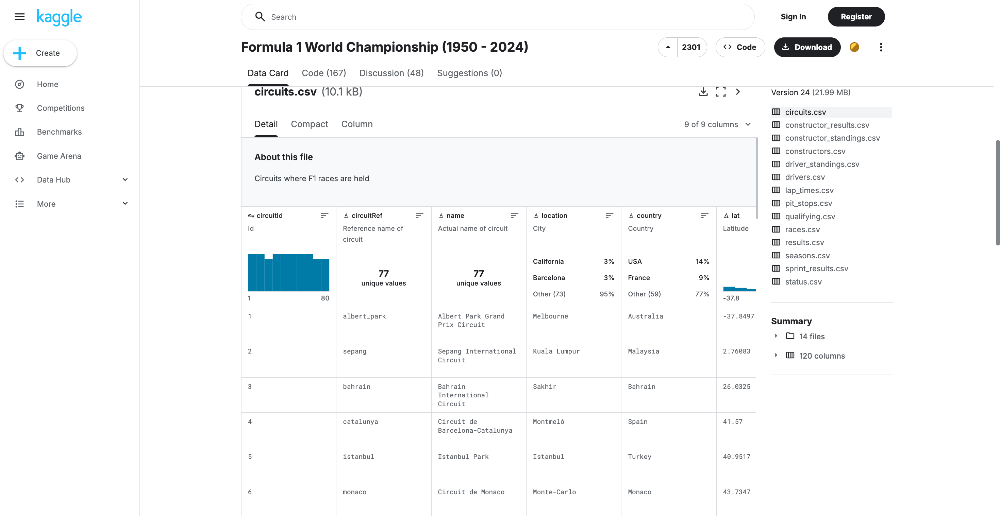

My First Project
My CT Portfolio

About This Project
My second term of Computer Technology was a data analysis project in which we were tasked with sorting information in to a spreadsheet and querying it.

My Issues and Experience
Unfortunately, I missed the main week of school this project was to be completed in at a camp, so my reflection will be what I learned over the term. This term was a shift from HTML and CSS into working with spreadsheets and data. I had to learn how to organise raw information into clean, structured rows and columns in google sheets before I could actually do anything useful with it. This was quite a big shift for me as I have used SQL in the past, and was very used to the more efficient way of retrieving data. Getting the data sorted correctly took a lot longer than I expected, since even small mistakes would throw off the results of a query later on.
Once I had the data sorted, I had to learn how to use the QUERY function in google sheets. This was a very different experience from SQL, since it is a lot more limited and has a very different syntax. I had to do a lot of research and trial and error to figure out how to get the results I wanted. I also had to learn how to use other functions like SUM, AVERAGE, and COUNT to get the data I needed.

Tools and Reflections
Throughout the project I mainly used google sheets, along with some research into different formulas and functions to figure out the best way to sort my data.
Looking back, I don't think I will use this type of data sorting, as in my experience SQL if much more effecient, but I enjoyed the learning aspect of it. Because I missed the last week, there's still a bit I'd like to go back and finish or polish once I get the chance. Overall, even with missing that final stretch, I came away with a good understanding of how google sheets and studying data works, and I'm keen to build on that.